TabControl의 속성 frameModal을 활성화하였을 때 팝업의 동작을 비교하는 예제입니다. frameModal을 활성화하면 팝업이 탭 콘텐츠 내부에서만 이동이 가능하게 되며, 팝업에서 팝업을 호출한 경우 상위 팝업을 닫으면 하위 팝업이 함께 닫힙니다.
이 기능은 TabControl의 속성 frameMode가 "wframe" 또는 "wframePreload"로 설정된 경우만 동작합니다.
(기본 설정) frameModal 비활성화
frameModal 활성화
영역 [(기본 설정) frameModal 비활성화]의 TabControl의 탭 "P00157S01"에서 버튼 팝업 열기를 클릭합니다.
[브라우저(Chrome) 실행 예시]
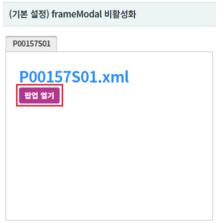
브라우저의 상단에 팝업 "popup1"이 열린 것을 확인합니다.
[브라우저(Chrome) 실행 예시 - PC]
(디바이스에 따라 아래의 참고 이미지가 다를 수 있습니다.)
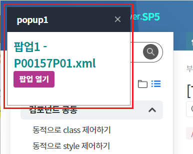
팝업 "popup1"에서 버튼 팝업 열기를 클릭합니다.
[브라우저(Chrome) 실행 예시 - PC]
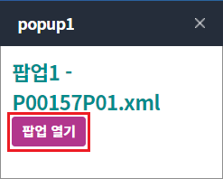
브라우저의 상단에 팝업 "popup1-1"이 열린 것을 확인합니다.
[브라우저(Chrome) 실행 예시 - PC]
(디바이스에 따라 아래의 참고 이미지가 다를 수 있습니다.)
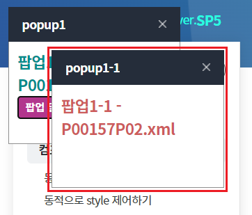
팝업 "popup1"에서 닫기 버튼을 클릭합니다.
[브라우저(Chrome) 실행 예시 - PC]
(디바이스에 따라 아래의 참고 이미지가 다를 수 있습니다.)
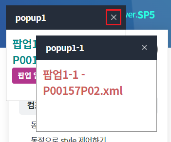
팝업 "popup1"은 닫히고 팝업 "popup1-1"은 열려 있음을 확인합니다.
[브라우저(Chrome) 실행 예시 - PC]
(디바이스에 따라 아래의 참고 이미지가 다를 수 있습니다.)
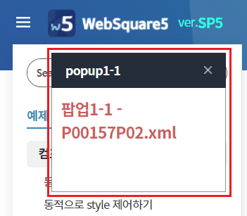
영역 [frameModal 활성화]의 TabControl의 탭 "P00123S01"에서 버튼 팝업 열기를 클릭합니다.
[브라우저(Chrome) 실행 예시]
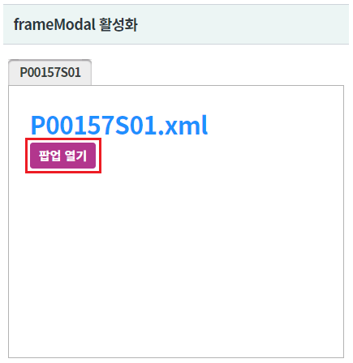
탭 영역에 팝업 "popup1"이 열린 것을 확인합니다.
[브라우저(Chrome) 실행 예시 - PC]
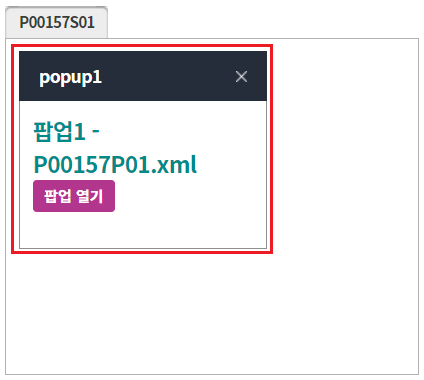
팝업 "popup1"에서 버튼 팝업 열기를 클릭합니다.
[브라우저(Chrome) 실행 예시 - PC]
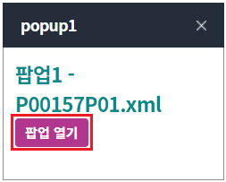
탭 영역에 팝업 "popup1-1"이 열린 것을 확인합니다.
[브라우저(Chrome) 실행 예시 - PC]
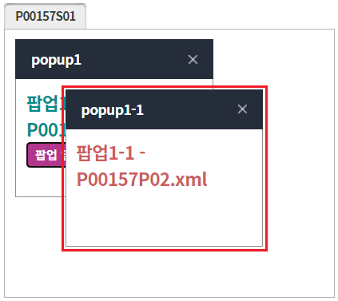
팝업 "popup1"에서 닫기 버튼을 클릭합니다.
[브라우저(Chrome) 실행 예시 - PC]
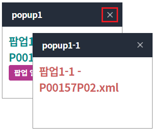
팝업 "popup1"과 팝업 "popup1-1"이 닫힌 것을 확인합니다.
[브라우저(Chrome) 실행 예시 - PC]
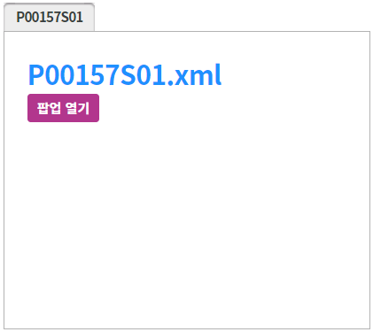
STEP1. 속성을 정의합니다.
[필수] frameModal="true" //[default: false, true] popup open시 WFrame 안쪽에 팝업을 띄우고 modal을 표시할지 여부.
그림 1.웹스퀘어5 SP5 스튜디오의 Property View(속성창) 예시
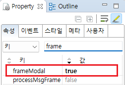
[소스 코드 예시]
<!-- tabControl 소스 본문 예시 --> <w2:tabControl frameModal="true" id="tac_exam2"> </w2:tabControl>
STEP2. 원하는 시점에 탭 추가 스크립트를 작성합니다.
//예제 파일의 경우 scwin.initPage에 작성되어 있습니다. //탭 옵션 var jsnTabOpt = { "label" : "P00157S01", "openAction" : "select" }; //탭 콘텐츠 옵션 var jsnContOpt = { "src" : "/page/P00157S01.xml", "wframe" : true, //필수 }; //TabControl [tac_exam2]에 탭 추가하기 tac_exam2.addTab( "P00157S01" , jsnTabOpt , jsnContOpt );
frameModal
addTab( id , tabOpt , contOpt )
[웹스퀘어5 SP5 개발 가이드] TabControl
링크 : https://docs1.inswave.com/sp5_user_guide/2059d4ce88b2fc16#0eeccc9d7fde2d33
[웹스퀘어5 SP5 개발 가이드] TabControl 지정한 프레임 영역에만 모달 팝업 표시
링크 : https://docs1.inswave.com/sp5_user_guide/2059d4ce88b2fc16#4e48611c508b4b53
[웹스퀘어5 SP5 개발 가이드] TabControl 부모 – 자식 팝업 닫기
링크 : https://docs1.inswave.com/sp5_user_guide/2059d4ce88b2fc16#a302a9227a5c90a3
TabControl 지정한 프레임 영역에만 모달 팝업 표시
링크 : https://youtu.be/dGoIpOaHJcA
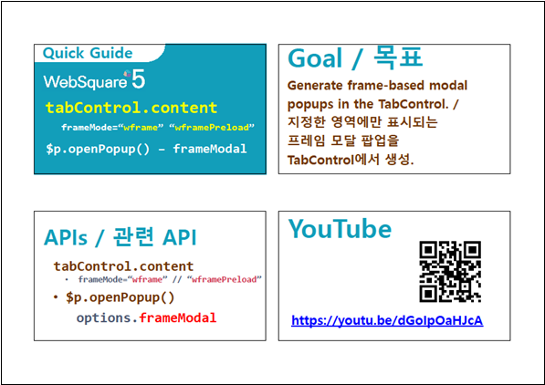
TabControl 부모 – 자식 팝업 닫기
링크 : https://youtu.be/eA6lQkcBGsY
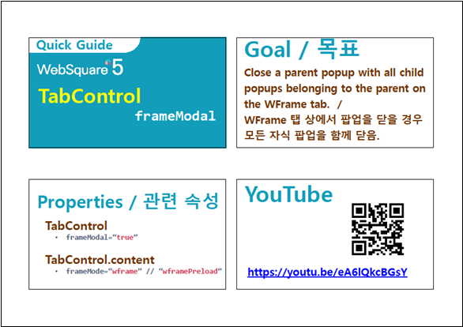